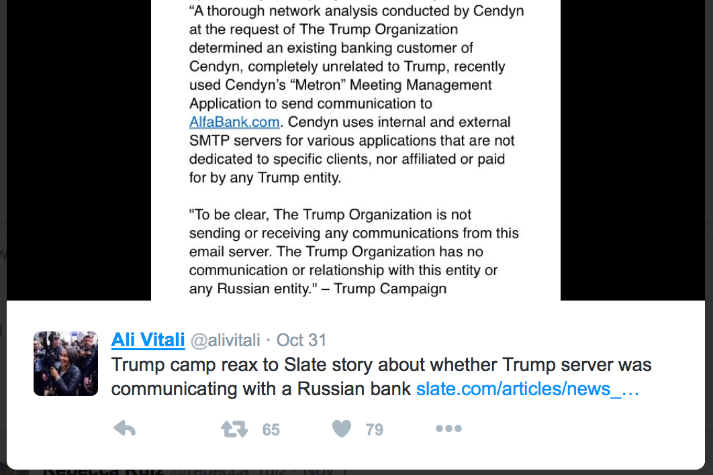
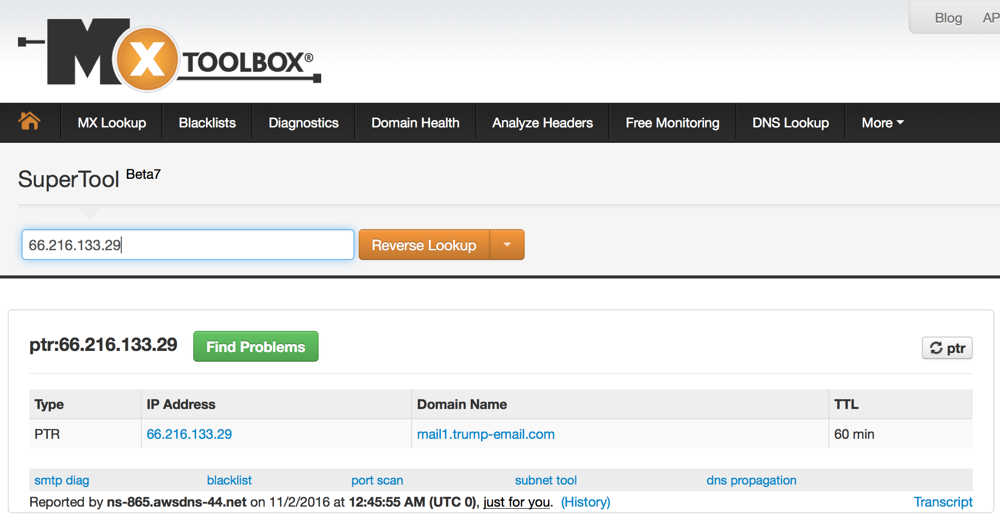

NBC's Ali Vitali (covering Trump and the GOP for @nbcnews) provides a statement she indicates comes from CenDyn and the Trump Organization, in which CenDyn acknowledges that the Trump server has been used fora bankto communicate with Alfa Bank, usingMeteron- a meeting sofware app. CenDyn states that their servers arenot dedicated to a specific client.Yet the Internet-Wide Scan Data Repository (scans.io) data show that the hostname mail1.Trump-Email.com has been stable since at least 2013. It did not change for three years, then did change on n 23 September 2016. At the time of this writing, 2 October 2016, no other hostname has pointed to this IP 66.216.133.29: just trump1.contact-client.com and mail1.trump-email.com. So this IP address is associated with only that server. SCROLL DOWN TO CONTINUE READING - reverse delegation OOPS!
The Trump Organization states that it is notsending or or receiving any communicationsand that it has no interaction with CenDyn. CenDynstated the reason they recreated a trump1.contact-client.com hostname pointing to this same IP address was for the Trump Organization to use the CRM software CenDyn provides to the Trump Organization.
The DNS binds a human readable phrase to an IP address. A forward resolution zone is where a machine maps the DNS to the IP address. A reverse resolution zone links an IP to a DNS address. They are two views of the same binding. Trump, CenDyn or some other party associated with the domain sought to erase the mail1.Trump-Email.com host by deleting forward resolution zones. So the domain name was removed from the normal way one would look up a domain. However, the reverse delegation still exists as of 2 November 2016. You can look at the image concurrent with this writing here, and then check yourself with the link to see if the resolution has been removed. https://mxtoolbox.com/ReverseLookup.aspx
 This is interesting because it is unusual to take a production email server used for marketing off the forward lookup. If this were a braod marketing campaign, you would want people to click and connect to your hotel and luxury good offers. If this were used for political fund-raising email then that is similarly unusual.